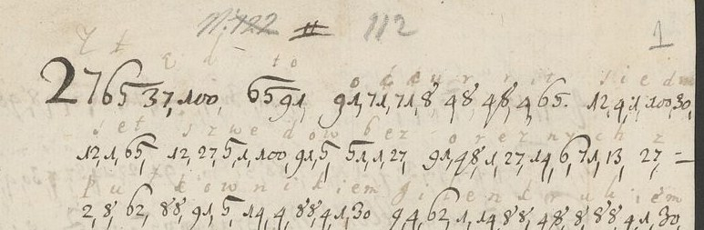

At a glanceExisting decipherment · complete
- The letters
- Two letters of 1709, probably from Constantin Turculeț, probably to Hetman Adam Mikołaj Sieniawski: news from Bender, one in Polish, one in Latin.
- Where
- Archiwum Narodowe w Krakowie, Zbiór Dzieduszyckich 26/32 nr 5 pp. 1–3 and 5–6 (DECODE R7481, R7482; status N/A, no decipherment attached).
- The cipher
- One number per letter, comma-separated (a = 37, b = 51, c = 71, d = 100, e = 1 … z = 27), with two nulls, 407 and 700.
- How it was deciphered
- The letters carry a full decipherment between the lines, and page 3 is a fair copy of it. It was transcribed and checked number by number against the key Kaczka printed in 2012.
- What it says
- Seven hundred Swedes without arms gone with Colonel Gyllenkrook to Suceava; the King of Sweden and Mazepa to go on to Rákóczi.
- Credit
- The key: M. W. Kaczka (2012), who printed it but not these letters. The decipherment: the contemporary hand between the lines.
DECODE catalogues these records with letters in other keys, which have their own pages (a different cipher in each): Brâncoveanu and Cantacuzino in the chancellery key (sieniawski1708), an adviser’s letter (r7475), Chomentowski at the Porte (chomentowski1713) and a Vienna agent to Baron Schenck (schenck1706).
01 The letters

R7481 (pp. 1–3) is in Polish: “Stąd to occurrit, siedmset Szwedów bez orężnych z pułkownikiem Gilenkrukiem przeszło do Soczawy”, and the King of Sweden with Mazepa are to go to Suceava and from there to Rákóczi. Its third page is a word-for-word fair copy of the decipherment of pp. 1–2 in another hand. R7482 (pp. 5–6) gives the same news in Latin: “Hinc tantum haec occurrunt novalia …”.
Kaczka printed the key of these letters (his note 22, the key of Constantin Turculeț) and announced the letters themselves for a separate edition, which was not found. The sender and recipient are therefore given with a query: Turculeț by the key, Sieniawski by the collection.
02 The key and the check
n 14 · o 91 · p 2 · q 11 · r 48 · s 12 · t 65 · u 8 · w/y 6 · x 7 · z 27
Every number was checked against the gloss and the key, and every place where they disagree was looked at again on the image. R7481: 520 of 522 numbers give sense; the other two, 407 and 700, carry no gloss and no value in the key, so they are nulls. R7482: 355 of 355. The encipherer’s slips are few and settled by the gloss: 68 for 65 in tam, 62 for 65 in ivit, the z of Rakoczego left out.
Full texts
The transcription and the decryption of every document on this page, so that the reading can be used and checked. Short files are shown here; all are in the repository.
R7481, nr 5 pp. 1-3, Polish news from Bender, 1709
Polish news from Bender for Hetman Sieniawski, probably from Constantin Turculeț in Moldavia, summer 1709: 700 Swedes without arms went with Colonel Gyllenkrook to Suceava, and the King and Mazepa are to go to Rákóczi. Page 3 is a contemporary fair copy of the decipherment.
Transcription
R7481 -- Zbior Dzieduszyckich 26/32 nr 5, archive p. 1 (img/IMG_R7481_I33827_P1.jpg)
Transcription conventions: tokens as written; "/" separates written word groups (the scribe's spacing);
the hand's 6 is a "б" with a long top flag, easily taken for 5 with an overline; a lone flagged 5 is read 6.
L1 C: 27 65 / 37,100, / 65 91 / 91,71,71,8,48,48,4,65. / 12,4,1,100,30, ("2765" written without comma, large initial 2)
G: Z t ą d to occurrit siedm (final m faint at the edge)
K: zt ad to occurrit siedm
L2 C: 12,1,65 / 12,27,6,1,100,91,6 / 51,1,27 / 91,48,1,27,14,6,71,13,27,=
G: set szwedow bez oreznych z
K: set szwedow bez oreznychz
L3 C: 2,8,62,88,91,6,14,4,88,4,1,30 / 9 4,62,1,14,88,48,8,88,4,1,30, (9 and 4 written run together, "94")
G: Pułkownikiem gilenkrukiem
K: pulkownikiem gilenkrukiem
L4 C: 2,48,27,1, / 12,27,62,91, / 100,91, / 12,91,71,27,37,6,1,6, / 4, / 65,37,30, (last group: t-value looks "68", read 65)
G: przeszło do Soczawey i tam
K: prze szlo do soczawey i tam
L5 C: 4,1,12,71,27,1, / 12,8,51,12,4,12,65,8,14,65, / 27,37,14,4,30,4,65,37,88,
G: iescze subsistunt za nim i tak
K: iescze subsistunt zanimitak
L6 C: 27,1, / 2,48,27,1,12,27,62,91, / 27,91,12,30,12,1,65, / 88,91,=
G: ze przeszło z osmset ko
K: ze przeszlo zosmset ko
L7 C: 27,37,88,91,6, / 37,62,1 / 6,4,1,62,1 / 27,14,4,71,13, / 2,91,8,71,4,1 (4 in 27,14,4 overwritten/struck)
G: zakow ale wiele z nich poucie
K: zakow ale wiele znich poucie
L8 C: 88,37,62,91, / 62,1,100,6,91, / 27,1, / 71,27,65,4,1,48,6,12,65
G: kało ledwo ze cztierys t
K: kalo ledwo ze cztieryst
L9 C: 37, / 27,91,12,65,37,62,91. / 65,8,48,71,6 / 12,4,1, / 12,71,4,37,
G: a zostało turcy sie ścia
K: a zostalo turcy sie scia
L10 C: 9,37,4,37, / 100,91, / 51,1,14,100,1,48,8, / 37,62,1, / 51,37,48,100,27,91,
G: gaia do benderu ale bardzo
K: gaia do benderu ale bardzo
L11 C: 6, / 30,37,62,1,6, / 88,6,91,71,4,1, / 6, / 4,8,12,27, / 71,27,37,12
G: w małey kwocie y iusz czas
K: w maley kwocie y iusz czas
L12 C: 27, / 8,2,62,6,14,37,62, / 27,37,30,6,12,62,91,30, / 4,71,13. / 88=
G: z upłynął zamysłom ich k
K: z uplynal zamyslom ich k
L13 C: 48,91,62, / 12,27,6,1,100,27,88,4, / 6, / 27, / 30,37,27,1,2,37, / 65,1,
G: rol szwedzki y z mazepa te
K: rol szwedzki y z mazepa te
L14 C: 100,1,6, / 30,37,4,37, / 4,12,71, / 100,91, / 12,91,71,27,37,6,1,6
G: dey maia isc do soczawey
K: dey maia isc do soczawey
L15 C: 37, / 27, / 65,37,30,65,37,100, / 100,91, / 48,37,88,91,71,1,9,91 (the token after 71 is a single overlined stroke, read 1; no 27 written)
G: a z tamtad do rakocego
K: a z tamtad do rakocego
[end of p. 1]
R7481 archive p. 2 (img/IMG_R7481_I33827_P3.jpg, left half)
L16 C: 4,14, / 10,8,65,8,48,8,30, / 71,91, / 30,4, / 91,71,71,8,48,48=
G: in futurum co mi occurr
K: in futurum co mi occurr
L17 C: 1,65, / 14,4,1,91,30,4,1,12,27,88,37,30. / 91,27,14,37,4,30,4,71, (the 4 in 91,27,14,37,4 is overwritten, possibly corrected from another digit)
G: et nieomieszkam oznaymic
K: et nieomieszkam oznai*mic
L18 C: 62,4,12,65 / 100,91, / "Wmm" (clear abbreviation, flourished) / 2,37,14 / 30 9,37,6, / 4,14,65,1,48,1,12, ("309" written as one group = 30,9)
G: list do [Wmm] pan mga w interes
K: list do pan mgaw interes
L19 C: 4,1, / 9,48,37,14,4,71, / 2,4,12,37,14,6, / 4,1,12,65, / 65,6,62,88,91,
G: ie granic pisany iest tylko
K: ie granic pisany iest tylko
L20 C: 2,48,1,65,1,7,65, / 88,91,30,30,8, / 14,4,88,91,6,37,14,4,37, / 100=
G: pretext kommu nikowania d
K: pretext kommu nikowania d
L21 C: 4,9,14,91,48,8,30, / 12,71,4,65,8, / 4,14, / 71,91,14,10,4,100,1,14=
G: ignorum scitu in confiden
K: ignorum scitu in confiden
L22 C: 65,4,37, / 27,37,12, / 6,4,1,62,71,1, / 8,2,48,37,12,27,37,30, / 27,1,
G: tia zas wielce upraszam ze
K: tia zas wielce upraszam ze
L23 C: 51,6, / 65,91, / 14,4,1, / 51,6,62,91, / 2,8,51,62,4,71,8,30, / 27,1,=
G: by to nie było publicum ze
K: by to nie bylo publicum ze
L24 C: 91,100,1,30,14,4,1, / 65,1, / 51,1,100,27,4,1,12,27, / 30,4,37,62
G: odemnie te bedziesz miał
K: odemnie te bedziesz mial
L25 C: "Wmm" (clear, flourished) / 309, / 2, / 407, / 37, / 700, / 14, / 14,91,6,4,14,6. ("309" one group; 407 and 700 have no gloss letter above them)
G: [Wmm] m p a n nowiny (gloss letters: m over 309, p over 2, a over 37, n over 700/14; nothing over 407)
K: mg* p ?* a ?* n nowiny
[end of p. 2]
R7481 archive p. 3 (img/IMG_R7481_I33827_P3.jpg, right half) -- CLEAR Polish, brown ink, a third (fair-copy) hand.
It is NOT a continuation of the letter: it is a fair-copy decipherment of the cipher on pp. 1-2, word for word
(the same text as the interlinear gloss, normalised: "za niemi także" for gloss "za nim i tak że", "cztery" for
cipher "cztiery", "kwocie" for "kwocie", "Rakoczego" for cipher/gloss "rakocego", "oznaymic").
Line breaks as on the page ("=" = hyphen at line end):
Ztąd to occurrit, siedmset Szwedow bez orężnych z Pułko=
wnikiem Gilenkrukiem przeszło do Soczawy y tam ie=
szcze subsistunt, za niemi także przeszło z osmset Ko=
zakow, ale wiele z nich pouciekało, ledwie ze cztery=
sta zostało. Turcy się ściągaią do Benderu; ale
barzo w małey quocie, y iuż czas upłynął zamy=
słom ich. Krol Szwedzki y z Mazepą tedy maią
iść do Soczawy, a ztamtąd do Rakoczego. In futurum
co mi occurret nieomieszkam oznaymic. List do
WMM Pana w Interessach Granic pisany iest tyl=
ko praetext kommunikowania dignorum Scitu. In
confidentia zas wielce upraszam, żeby to nie było pu=
blicum, że odemnie też będziesz miał WMM Pan
nowiny.
(pencil, archivist, lower right:) 1709
("WMM" written as the same flourished abbreviation the cipher uses in clear; "ledwie" in the copy vs "ledwo" in the cipher.)
R7481 cover (img/IMG_R7481_I33827_P2.jpg), docket in a later archival hand, brown ink:
"Wołoskie z Wiadomościami z Benderu / o Szwedach - Czerkiesach i Turkach - Po Łacinie / 3 Listy cyfframi"
("Wallachian [letters] with news from Bender about the Swedes, Circassians and Turks - in Latin - 3 letters in cipher")
pencil: "N. 122" (struck through), "112", "1709"; pencil "5" lower right. Rest of the leaf blank (bleed-through only).
=== COUNTS AND KEY CONFLICTS (generated) ===
cipher tokens total: 522; tokens with a written gloss letter: 519; glossed: 99.4%
Disagreements key B vs gloss (line, kind, cipher tokens, key-B letters, gloss letters):
L17 replace: tokens 4 -> key B "i" / gloss "y" (oznaymic; the 4 is overwritten -- scribe wrote i for y; y is otherwise 6 throughout, 15+ times)
L25 delete: tokens 9 -> key B "g" / gloss ""
L25 delete: tokens 407 -> key B "?" / gloss ""
L25 delete: tokens 700 -> key B "?" / gloss ""
Notes on the conflicts:
- No key-B value is contradicted. y = 6 confirmed (shared with w; ~20 occurrences: Soczawey, turcy, małey, y, dey, pisany, tylko, by, było, nowiny).
ł = 62 (l), ą = 37 (a), ę = 1 (e), ś = 12, ż = 27: Polish diacritics are dropped. No j, no ł/ą/ę-specific number.
- L25: "309" stands where the gloss has only "m" (in L18 the same "30 9" + 37 is glossed "mga" = M[iłościwe]go);
407 and 700 are outside key B and have no gloss letter: nulls (or a deliberate disguise inside "WMM Pan").
- "Wmm" (WMM = Waszmość/Wielmożny Mości) is written in clear twice inside the cipher.
- Orthography of the encipherer: occurrit, cztiery, kwocie, rakocego (z dropped), kommunikowania.
SUMMARY: Polish letter in cipher (pp. 1-2) with a word-for-word fair-copy decipherment on p. 3 in another hand,
undated (archivist's pencil "1709"; content fixes it to summer 1709, after Poltava). News from the Moldavian side:
700 unarmed Swedes with Colonel Gyllenkrok ("Gilenkruk") have gone to Suceava (Soczawa) and remain there; about 800
Cossacks followed but many deserted, barely 400 are left; the Turks are gathering at Bender, but in small numbers, and
the time for their plans has passed; the King of Sweden (Charles XII) and Mazepa are to go to Suceava and from there to
Rákóczi. The writer will report what else occurs; his letter to "WMM Pan" about border matters is only a pretext for
passing on news; he begs secrecy so it is not known that the addressee gets news from him. Cover (shared with the
bundle): "Wołoskie z Wiadomościami z Benderu o Szwedach, Czerkiesach i Turkach - Po Łacinie - 3 Listy cyfframi".Transcription
R7481 pass 2 (9 Oct 2026) -- token-level check of every gloss gap / gloss-key disagreement against the image.
Key B (a=37 b=51 c=71 d=100 e=1 f=10 g=9 h=13 i=4 k=88 l=62 m=30 n=14 o=91 p=2 q=11 r=48 s=12 t=65 u=8 w/y=6 x=7 z=27).
Crops: img/crop/chk2_R7481_*.jpg (native resolution, enlarged 2-2.5x).
Tokens checked
1. L4 last group, glossed "t" (tam). Crop chk2_R7481_L4.jpg. Written: the hand's flagged 6 followed by a closed
figure that looks more like 8 than 5 ("68"). 68 is outside key B; gloss t, and "tam" needs t (=65).
SETTLED: encipherment/graphic slip for 65; read t. Gives sense.
2. L15 "48,37,88,91,71,1,9,91" (rakocego). Crop chk2_R7481_L15.jpg. The token after 71 is a "1" with an overline
(a π-like form), gloss "e"; no 27 (z) written. SETTLED: 1 = e as key; the encipherer dropped the z of "cz"
(Rakoczego spelt rakocego). Gives sense.
3. L17 "91,27,14,37,4,30,4,71" (oznaymic). Crop chk2_R7481_L17.jpg. The fifth token is a 4 written heavily over
another figure (the underlying stroke is not recoverable; it is not a clean 6). Gloss "y". Key 4 = i.
SETTLED: key (i); the encipherer spelt "oznaimić", the glossator normalised to y. Either spelling gives
"oznajmić". No key variant.
4. L25 "Wmm 309, 2, 407, 37, 700, 14, 14,91,6,4,14,6." Crop chk2_R7481_L25.jpg.
Gloss letter positions: "m" stands over the 30 of 309, "p" over 2, "a" over 37, "n" over 14; NOTHING over
the 9 of 309, over 407 or over 700.
- 309 = 30,9 written as one group (as in L18 "30 9,37" = m g a, "M[iłościwe]go"): here m g = the same
abbreviation "M[iłościwy]" (fair copy p. 3: "WMM Pan"). SETTLED: key (m, g); abbreviation, gives sense.
- 407 and 700: outside key B (key B has no value above 100), no gloss letter, and the word reads "pan" without
them (2-37-14 = p-a-n, as in L18 "2,37,14"). SETTLED: nulls inserted inside "Pan" (two "0"-numbers as
dummies). They carry no letter; counted as tokens without sense.
5. L7 "27,14,4,71,13" (z nich): the 4 is overwritten/struck; gloss "i"; "znich" needs i. Key. Gives sense.
No other gloss gaps: every remaining token has a gloss letter that agrees with key B.
Counts (tokens = number groups between commas, "309" counted as 2 tokens 30,9 as in the generated count; the two
clear "Wmm" are not cipher tokens):
total cipher tokens 522; giving sense 520 (99.6%); open 2 = the nulls 407, 700 (no value by design).Decryption
R7481 -- reading (pass 2, 9 Oct 2026; spelling restored 23 Oct 2026, v9). Unsigned, undated (summer 1709); writer
in Moldavia (Turculeț?), to Hetman Sieniawski. Whole letter is in key B except the two clear "WMM" abbreviations.
Sources: cipher decoded with key B, checked against the interlinear gloss and the fair copy on p. 3 (they agree).
Clear words are marked {clear}.
Spelling (v9, 23 Oct 2026): the writer's, letter for letter as the figures give them (K lines of R7481.txt and
R7481_pass2.txt): Ztąd, siedmset, Gilenkrukiem, Soczawey, iescze, cztierysta, małey, iusz, tedey, maią, Rakocego,
oznaimić, te (for też), interesie, Pan Mga. The modernised Polish of 9 Oct (Stąd, siedemset, Gyllenkrokiem, Suczawy,
jeszcze, czterysta, małej, już, tedy, mają, Rakoczego, oznajmić, też, Pana Miłościwego) is undone; no word was changed
or added. The Polish diacritics (ą ę ł ś ć ż ó), which the cipher does not carry, are supplied as before; word
division follows the gloss. "Mga" (l. 18) and "Mg" (l. 25, figures 30 9) are the writer's abbreviations of
Miłościwego / Miłościwy, kept as written. The z after "czas" (l. 12) is in the figures and the gloss (the fair copy
drops it) and is kept.
Ztąd to occurrit: siedmset Szwedów bez orężnych z Pułkownikiem Gilenkrukiem przeszło do Soczawey i tam iescze
subsistunt. Za nimi także przeszło z ośmset Kozaków, ale wiele z nich pouciekało; ledwo że cztierysta zostało.
Turcy się ściągaią do Benderu, ale bardzo w małey kwocie, y iusz czas z upłynął zamysłom ich. Król szwedzki y z
Mazepą tedey maią iść do Soczawey, a z tamtąd do Rakocego. In futurum co mi occurret, nie omieszkam oznaimić. List
do {WMM} Pan Mga w interesie granic pisany iest tylko pretext kommunikowania dignorum scitu. In confidentia zaś
wielce upraszam, że by to nie było publicum, że odemnie te będziesz miał {WMM} Mg Pan nowiny.
Notes: "bez orężnych" (the gloss's division) = unarmed. Two null numbers (407, 700) stand inside the final "Pan";
they carry no letter. Nothing is left unread.Reading
R7481 -- reading (pass 2, 9 Oct 2026; spelling restored 23 Oct 2026, v9). Unsigned, undated (summer 1709); writer
in Moldavia (Turculeț?), to Hetman Sieniawski. Whole letter is in key B except the two clear "WMM" abbreviations.
Sources: cipher decoded with key B, checked against the interlinear gloss and the fair copy on p. 3 (they agree).
Clear words are marked {clear}.
Spelling (v9, 23 Oct 2026): the writer's, letter for letter as the figures give them (K lines of R7481.txt and
R7481_pass2.txt): Ztąd, siedmset, Gilenkrukiem, Soczawey, iescze, cztierysta, małey, iusz, tedey, maią, Rakocego,
oznaimić, te (for też), interesie, Pan Mga. The modernised Polish of 9 Oct (Stąd, siedemset, Gyllenkrokiem, Suczawy,
jeszcze, czterysta, małej, już, tedy, mają, Rakoczego, oznajmić, też, Pana Miłościwego) is undone; no word was changed
or added. The Polish diacritics (ą ę ł ś ć ż ó), which the cipher does not carry, are supplied as before; word
division follows the gloss. "Mga" (l. 18) and "Mg" (l. 25, figures 30 9) are the writer's abbreviations of
Miłościwego / Miłościwy, kept as written. The z after "czas" (l. 12) is in the figures and the gloss (the fair copy
drops it) and is kept.
Ztąd to occurrit: siedmset Szwedów bez orężnych z Pułkownikiem Gilenkrukiem przeszło do Soczawey i tam iescze
subsistunt. Za nimi także przeszło z ośmset Kozaków, ale wiele z nich pouciekało; ledwo że cztierysta zostało.
Turcy się ściągaią do Benderu, ale bardzo w małey kwocie, y iusz czas z upłynął zamysłom ich. Król szwedzki y z
Mazepą tedey maią iść do Soczawey, a z tamtąd do Rakocego. In futurum co mi occurret, nie omieszkam oznaimić. List
do {WMM} Pan Mga w interesie granic pisany iest tylko pretext kommunikowania dignorum scitu. In confidentia zaś
wielce upraszam, że by to nie było publicum, że odemnie te będziesz miał {WMM} Mg Pan nowiny.
Notes: "bez orężnych" (the gloss's division) = unarmed. Two null numbers (407, 700) stand inside the final "Pan";
they carry no letter. Nothing is left unread.Translation
# R7481, Polish news from Bender for Hetman Sieniawski, [summer 1709]: English translation
Translated from `R7481_reading.txt` (Claude Opus 5.5, 23 Oct 2026): the whole letter is cipher (key B), checked
against the interlinear gloss and the contemporary fair-copy decipherment on p. 3, which agree. Nothing is unread.
The writer's Latin phrases are translated; "WMM Pan" (Waszmość Miłościwy Pan) is rendered "Your Gracious Lordship".
## Translation
From here this comes to hand: seven hundred unarmed Swedes with Colonel Gyllenkrook ("Gilenkruk") have gone over to
Suceava (Soczawa) and are still staying there. After them some eight hundred Cossacks also went over, but many of
them have run away; barely four hundred are left. The Turks are gathering at Bender, but in very small numbers, and
the time for their designs has already passed. The King of Sweden, with Mazepa, is then to go to Suceava, and from
there to Rákóczi. Whatever occurs to me in future I shall not fail to report. The letter to Your Gracious Lordship
written on the business of the frontier is only a pretext for communicating things worth knowing. In confidence,
however, I earnestly beg that it should not be made public that Your Gracious Lordship will have news from me as
well.R7482, nr 5 pp. 5-6, Latin letter, 1709
A Latin letter on the same news ('Hinc tantum haec occurrunt novalia'), addressed to the Grand Hetman (Sieniawski) and docketed as from the Hospodar of Wallachia: Tarło still waits at Suceava for orders.
Transcription
R7482 -- Zbior Dzieduszyckich 26/32 nr 5, archive p. 5 (img/IMG_R7482_I33831_P1.jpg), Latin
Transcription conventions: in this letter the numbers inside a word are run together WITHOUT commas
(spaces here are the editor's segmentation, checked against key B and the gloss); "," and "." are the
scribe's, between words. "&" and "æ" are written in clear inside the number groups.
L1 C: 13 4 14 71 / 65 37 14 65 8 30, / 13 & 71 / 91 71 71 8 48 8 (large initial 13)
G: Hinc tantum hec occuru
K: hinc tantum h&c occuru
L2 C: 14 65, / 14 91 8 37 62 4 37, / 11 8 91 100, / 100 91 30 4
G: nt noualia quod domi
K: nt noualia quod domi
L3 C: 14 8 12 / 65 37 48 62 91, / 37 100 13 8 71, / 12 8 51 12 4
G: nus tarlo adhuc subsi
K: nus tarlo adhuc subsi
L4 C: 12 65 4 65, / 12 91 71 27 37 8 4 æ, / 100 4 71 1 14 100 91 (first 65: the 5 is heavily overwritten; the 7 of 37 in soczauiæ overwritten)
G: stit soczauiæ dicendo
K: stit soczauiæ dicendo
L5 C: 11 8 91 100, / 1 7 2 1 71 65 37 65, / 30 37 14 100 37 65 8 ("1 7 2:1" -- a dot/colon between 2 and 1)
G: quod expectat mandatu
K: quod expectat mandatu
L6 C: 30, / 37 / 12 8 91, / 2 48 4 14 71 4 2 37 62 4; / 13 37 14
G: m a Suo principali Han
K: m a suo principali han
L7 C: 4 8 4 62, / 71 91 14 65 48 37, / 71 1 48 71 37 12 12 91 12, (62 written plainly, against gloss t)
G: iuit contra cercassos
K: iuil* contra cercassos
L8 C: 1 65 / 10 1 48 65 8 48, / 11 8 91 100, / 71 8 30 / 4 62 62 4
G: et fertur quod cum illi
K: et fertur quod cum illi
L9 C: 12, / 10 1 71 1 48 4 65, / 71 91 14 8 1 14 65 4 91 14 1 30,
G: s fecerit conuentionem
K: s fecerit conuentionem
L10 C: 1 65, / 14 91 14 / 100 8 30, / 1 12 65, / 48 1 8 1 48 12 8 12. (second 48 written "4.8" with a dot)
G: et non dum est reuersus
K: et non dum est reuersus
L11 C: 13 4 12, / 100 4 1 51 8 12, / 8 1 14 65 8 48 8 12 / 1 12 65
G: his diebus uenturus est
K: his diebus uenturus est
L12 C: 37 51 / 4 62 62 91, / 51 37 62 71 4 51 37 12 27 37, / 37
G: ab illo balcibasza a (the second b of the gloss is overwritten)
K: ab illo balcibasza a
L13 C: 11 8 91, / 2 62 1 14 4 91 48 1 30, / 13 37 51 1 51 4 30 8 12 (3 of the last 30 overwritten)
G: quo pleniorem habebimus
K: quo pleniorem habebimus
L14 C: 4 14 10 91 48 30 37 65 4 91 14 1 30. / 1 14 / 10 8 67 8 = ("1 14" with a large initial 1 for "in"; "67" written plainly where key B wants 65)
G: informationem in futu (gloss "i" of "in" is blotted/overwritten; gloss "t" struck and rewritten)
K: informationem e*n fu?*u
L15 C: 48 8 30 (alone, right-aligned below)
G: rum
K: rum
[end of p. 5]
R7482 archive p. 6 (img/IMG_R7482_I33831_P3.jpg, left half)
L16 C: 48 8 30, / 11 8 & 71 8 14 11 8 & / 91 71 71 8 48 48 1 14 65 (48 8 30 repeats the catchword "rum" from p. 5)
G: rum quæcunque occurrent
K: rum qu&cunqu& occurrent
L17 C: 14 91 14 / 14 1 9 62 4 9 37 30, / 100 1 10 1 48 48 1, / 1 37 14
G: non negligam deferre ean
K: non negligam deferre ean
L18 C: 100 1 30, / 10 37 71 4 62 4 65 37 65 1 30, / 1 7 / 4 62 62 4 12
G: dem facilitatem [no gloss over "1 7"] illis
K: dem facilitatem e*x* illis
(1 7 decoded with key B, not written on the page: ex)
L19 C: 2 37 48 65 4 51 8 12, / 48 91 9 37 30 8 12, / 1 65, / 12 2 1
G: partibus rogamus et spe
K: partibus rogamus et spe
L20 C: 48 37 30 8 12.
G: ramus
K: ramus
[end of p. 6; p. 7 (right half) blank apart from pencil "7" and offset/bleed-through]
=== COUNTS AND KEY CONFLICTS (generated) ===
cipher tokens total: 355; tokens with a written gloss letter: 353; glossed: 99.4%
Disagreements key B vs gloss (line, kind, cipher tokens, key-B letters, gloss letters):
L7 replace: tokens 62 -> key B "l" / gloss "t"
L14 replace: tokens 1 -> key B "e" / gloss "i"
L14 replace: tokens 67 -> key B "?" / gloss "t"
L18 delete: tokens 1,7 -> key B "ex" / gloss ""
Notes on the conflicts:
- L7 "4 8 4 62" glossed "iuit" (= ivit): 62 (l) written for 65 (t) -- an encipherment slip, not a key variant.
- L14 "1 14" glossed "in": 1 (e) for 4 (i), written with a large initial 1; the glossator blotted the letter here. Slip or
misreading of the large form; not a key variant.
- L14 "67" glossed "t" in futurum: 67 is not in key B; most likely a malformed 65 (5 written like 7). Recorded as written.
- L18 "1 7" = "ex" (x = 7 confirmed, cf. expectat L5 "1 7 2 1 71 65 37 65") carries no gloss.
- Clear signs inside the number groups: "&" (= æ/e in hæc, quæcunque) and "æ" (Soczaviæ). No j, y, v, w needed.
COVER / DOCKETS (img/IMG_R7482_I33831_P2.jpg):
address (upside down relative to the dockets, writer's hand): "Illustrissimo Domino / Supremo Duci Regni" (+ flourish)
docket, upper right: "Od JMci Hospodara Wołoskiego. / Listy Cyfrowane Wołoskij"
docket, left margin (vertical): "Od Woiewody Wałaskiego / w cyfrach.-"; pencil beneath: "9 Januarij 1709"
numbers upper left: "18" (ink), "8" (pencil); remains of a black wax seal at centre.
p. 5 head: pencil "N. 122" (struck) "112", folio "5"; p. 6 folio "6", p. 7 folio "7".
SUMMARY: Latin letter in cipher (pp. 5-6) to the Grand Hetman of the Crown ("Supremo Duci Regni", i.e. Sieniawski),
docketed as from the Hospodar/Voivode of Wallachia-Moldavia ("Wołoski"); pencil date 9 January 1709, which sits badly
with the content (Bender/Suceava news of the same summer 1709 situation as R7481). News: Mr Tarło is still staying at
Suceava (Soczavia), saying he awaits orders from his principal; the Khan has gone against the Circassians and is said to
have made an agreement with them and has not yet returned; Baltacı Pasha ("Balcibasza") is expected from him in a few
days, from whom fuller information will come. The writer promises to pass on whatever occurs "from those parts" and
closes "rogamus et speramus".Transcription
R7482 pass 2 (9 Oct 2026) -- token-level check of every gloss gap / gloss-key disagreement against the image. Key B as in R7481. Crops: img/crop/chk2_R7482_*.jpg (native resolution, enlarged 2-2.5x). Tokens checked 1. L7 "4 8 4 62" glossed "iuit". Crop chk2_R7482_L7.jpg. The last group is a clear 62 (the 6 with the hand's long flag, then a plain 2); no correction. Key gives "iuil". SETTLED: encipherment slip, 62 (l) written for 65 (t); read "ivit" with the gloss. Gives sense. 2. L14 "1 14" glossed "in" (gloss letter blotted). Crop chk2_R7482_L14.jpg. The first figure is the hand's large λ-shaped 1 (same form as every other 1 on the page, cf. "13" at L1 in chk2_R7482_L1.jpg), not 4. SETTLED: encipherment slip, 1 (e) for 4 (i); "en futurum" read "in futurum". Gives sense. 3. L14 "10 8 67 8 / 48 8 30" glossed "futu-rum". Crop chk2_R7482_L14.jpg. The third group is the flagged 6 followed by a figure with a straight top bar, shaped like 7; compare the 65 of "tantum" (chk2_R7482_L1.jpg), whose 5 also carries a long top stroke. 67 is outside key B. SETTLED: a 65 (t) with the 5 written 7-like (graphic slip); gloss t; "futurum". Gives sense. 4. L18 "1 7" with no gloss letter. Crop chk2_R7482_L18.jpg. Plainly "1 7" (λ7), comma-free between "facilitatem," and "4 62 62 4 12" (illis). Key B: e x (x = 7 confirmed in "expectat", L5). SETTLED: key; "ex illis partibus". The glossator skipped the word. Gives sense. 5. L4 first 65 (subsistit) and 37 (Soczaviae) overwritten; L10 "4.8" with a dot; L5 "2:1" colon; L13 3 of 30 overwritten: all glossed in agreement with key B; no question. Counts (number groups only; the clear signs "&" and "æ" inside words are not counted as cipher tokens): total cipher tokens 355; giving sense 355 (100%); open: none. Three encipherment slips (62 for 65, 1 for 4, 67 for 65) are read through the gloss and the context; none is a key variant.
Decryption
R7482 -- reading, Latin (pass 2, 9 Oct 2026; spelling restored 23 Oct 2026, v6). Unsigned; addressed "Illustrissimo Domino
Supremo Duci Regni" (Sieniawski); docketed "Od JMci Hospodara Wołoskiego"; content summer 1709. Whole letter in key B.
Hinc tantum hæc occurunt novalia: quod Dominus Tarlo adhuc subsistit Soczaviæ, dicendo quod expectat mandatum
a suo principali. Han ivit contra Cercassos, et fertur quod cum illis fecerit conventionem, et nondum est reversus.
His diebus venturus est ab illo Balcibasza (Baltacı Pasha), a quo pleniorem habebimus informationem. In futurum
quæcunque occurrent, non negligam deferre eandem facilitatem ex illis partibus. Rogamus et speramus.
("novalia" = novella, news; "eandem facilitatem deferre" is the writer's Latin: to pass them on with the same ease.)
Nothing is left unread.
Spelling (v6, 23 Oct 2026): the writer's, as the figures and the interlinear gloss give it (R7482.txt): hæc and
quæcunque with the clear "&"/"æ" sign written in the groups, occurunt, expectat, Tarlo, Soczaviæ; the normalised
forms of 9 Oct (haec, occurrunt, exspectat, Tarło, Soczaviae, quaecunque) are undone. u/v printed as v, as before;
the three encipherment slips (iuil, en, 67) are read through the gloss. No word was changed.Translation
# R7482, Latin letter to the Grand Hetman (Sieniawski), [summer 1709]: English translation
Translated from `R7482_reading.txt` (Claude Opus 5.5, 23 Oct 2026): the whole letter is cipher (key B), checked
against the interlinear gloss. Docketed "from His Grace the Hospodar of Wallachia". Nothing is unread.
## Translation
From here only this news comes to hand: that Lord Tarło is still staying at Suceava, saying that he is waiting for an
order from his principal. The Khan has gone against the Circassians, and it is said that he has made an agreement
with them, and he has not yet returned. In these days Baltacı Pasha ("Balcibasza") is to come from him, from whom we
shall have fuller information. Whatever occurs in future, I shall not neglect to pass it on with the same readiness
from those parts. We ask and we hope.03 Sources
- Archiwum Narodowe w Krakowie, Zbiór Dzieduszyckich 26/32 nr 5: DECODE R7481, R7482.
- M. W. Kaczka, “Unpublished Letters of Constantin Brâncoveanu and Constantin Stolnicul Cantacuzino, from the Polish Archives”, Danubius XXX (Galați, 2012), pp. 101–140, PDF: key B in note 22.
Transcriptions and the token-by-token checks are in targets/turculet1709/.
Cite this page
Daniel Bourdeau, “News from Bender, 1709: two letters in the Turculeț key”, Cyphersolver, posted 15 October 2026, updated 23 October 2026, https://cyphersolver.com/turculet1709.html.